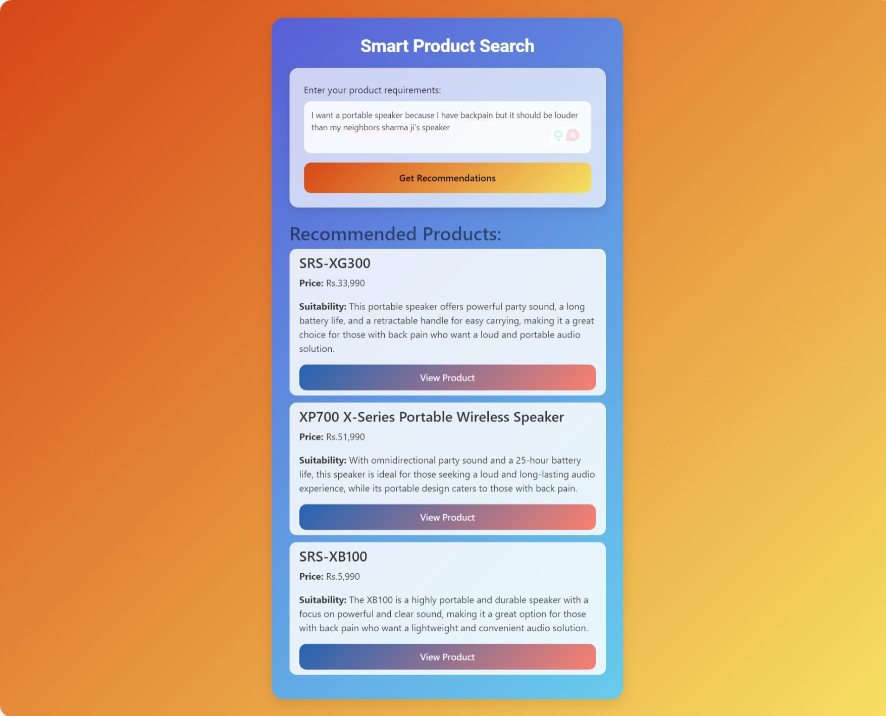

A step towards redefining user experience in Sony D2C platforms
Kaizen is a hyper-personalization engine, built to make e-commerce shopping more intuitive and engaging.
Designed as customizable microservices, Kaizen can be seamlessly integrated into any Sony D2C platform with simple API calls.
Recommends products based on what users are actually interested in.
We bundle relevant products on the fly and suggest them to users.
Describe what you are looking for and it will suggest relevant products.
Simple – Easy to integrate into existing Sony platforms.
Smart – Understands user behavior and adapts accordingly.
Seamless – Provides a frictionless shopping experience.
Prompt - I want a portable speaker because I have backpain but it should be louder than my neighbors sharma ji's speaker
